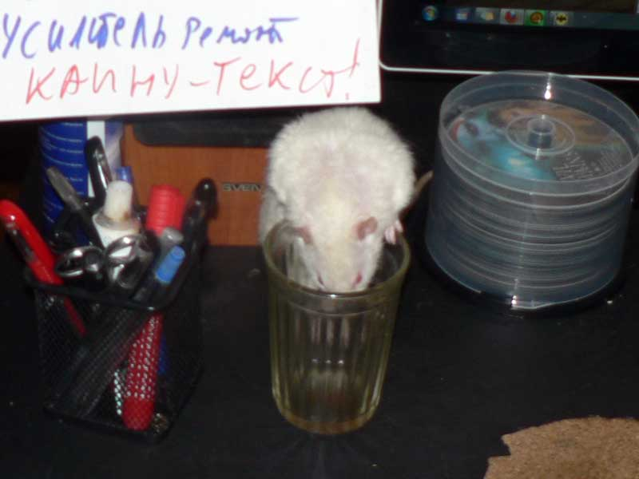
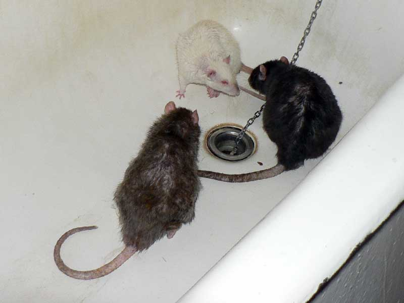

Январь 2013 - 2
Как говорилось в предыдущей серии, у нас появивлся Митрофан Копчёный, по-домашнему — Мотя.
Вот он на моём столе осваивается.

— А это что за рюмка чая?

— Говорят, больше всего проводов сзади компьютера?

— Да шучу я, шучу. Зачем сразу "а по ушам?".
Пытались свести всех по стандартному методу, в ванне.

Октябрь Семнадцатого: — Терабайта больше не забижать! В натуре. Или в тентуре, точно не помню.
— Терабайт, новенького не трогаем, демонстрируем мирный характер — умываемся.

— Октябрь, намёк понял. Умываемся.

— Так, я пошёл в сторонку, а ты иди на контакт.

Октябрь: — Я уже чистый два раза, чего этот тормоз приклеился к месту и не общается?
Октябрь: — Слышь, шкет, начну пушиться и боком ходить — хуже будет!

Терабайт: — Мелкий, он правду говорит. По секрету скажу: давай дружить лучше.

Октябрь: — Ты дружить умеешь ваще?
— Показываю, как выкусывают. Учись!
— Хозяин! Это новенький — какой-то социопат!

Попытка засунуть в клетку. Справа виден хвост Терабайта, слева Мотя забирается под лестницу, не желая общаться. Октябрь временно оставлен снаружи. Толку — ноль.

Даже так вот на ночь оставляли, через решётки пообщаться.
Посмотреть на новенького вылез Дюк Нюкем, в домике видна морда Джона Ди.
Попытка свести с Терабайтом. Так и сидели: Терабайт в углу поудобнее, а Мотя у решётки с явным намерением уйти.
Мотя, вероятнее всего, жил один и его сначала любили. Т.е. абсолютно ручной и тискательный, но при этом с другими крысам не общался. Он не строит иерархию, а просто не понимает, что с этими другими крысами делать. Вот по людям полазить всегда рад, подстравляетсмя под почесушки и пр. Пищит при виде любого крыса рядом -- вчера вот Терабайта ему подсунули, Терабайт просто под него подлезает -- мол, я не возражаю, что ты моложе и здоровее, просто в обнимку лучше! А он сидит в ступоре -- и не агрессивный, просто в непонятках.
У нас был похожий крыс Гаврик -- но там было известно происхождение. Жил один, с другими так и не сошёлся. Его и не трогали, а он пищал, как кто приближался. Так и жил у нас на кухонном столе. Похоже, аналогично.